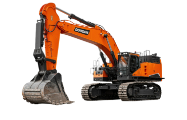

ЭКСКАВАТОРЫ
Аренда экскаватора позволит вам сэкономить время и деньги. Если Вам трудно определиться с выбором техники, наши специалисты подскажут Вам как с наименьшими затратами в наиболее быстрые сроки выполнить Ваши задачи, Связаться в нами можно любым удобным способом: позвонив по телефону +7 (495) 151-64-85 или оставив заявку на обратный звонок в шапке сайте или под выбранной моделью спецтехники.
-
Экскаватор Doosan 500
5000 руб./часОписаниеЗАКАЗАТЬЭкскаватор гусеничный DX500LCA с ковшом 3.2 м³ Модели спецтехники этого вида являются наиболее устойчивыми и проходимыми, поэтому привлекаются для работ на неровных площадках или труднодоступных участках. Гусеничная цепь экскаваторов Doosan имеет автономную систему смазки, которая надёжно защищена от попадания внешних загрязнений. Особая конструкция хода обеспечивает повышенную надёжность и бесперебойную работу. Машины Doosan работают в двух режимах:
- копание – позволяет использовать только 85% силового потенциала, что способствует уменьшению расхода топлива; применяется для копки лёгких грунтов при погрузочно-разгрузочных работах;
- траншейный – задействуется полная мощность агрегатов, применяется при разработке тяжёлых и твёрдых грунтов.
Параметры Значение Ед.изм Оперативный вес 49900 кг Объем двигателя 11051 куб.см Ширина гусениц 600 мм Длина 11590 мм Высота 4140 мм 
-
Экскаватор Doosan 500
5000 руб./часОписаниеЗАКАЗАТЬЭкскаватор гусеничный DX500LCA с ковшом 3.2 м³ Модели спецтехники этого вида являются наиболее устойчивыми и проходимыми, поэтому привлекаются для работ на неровных площадках или труднодоступных участках. Гусеничная цепь экскаваторов Doosan имеет автономную систему смазки, которая надёжно защищена от попадания внешних загрязнений. Особая конструкция хода обеспечивает повышенную надёжность и бесперебойную работу. Машины Doosan работают в двух режимах:
- копание – позволяет использовать только 85% силового потенциала, что способствует уменьшению расхода топлива; применяется для копки лёгких грунтов при погрузочно-разгрузочных работах;
- траншейный – задействуется полная мощность агрегатов, применяется при разработке тяжёлых и твёрдых грунтов.
Параметры Значение Ед.изм Оперативный вес 49900 кг Объем двигателя 11051 куб.см Ширина гусениц 600 мм Длина 11590 мм Высота 4140 мм